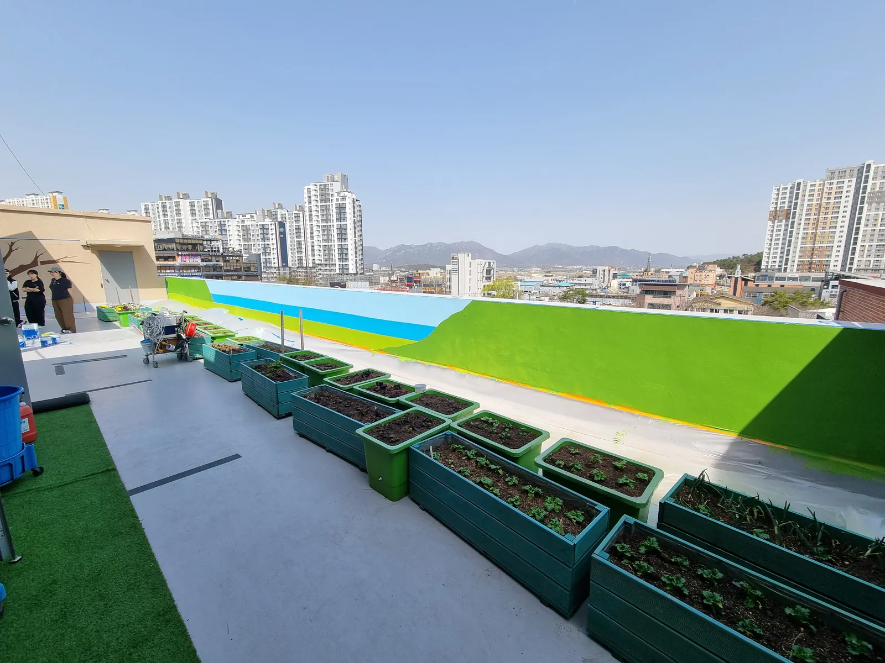
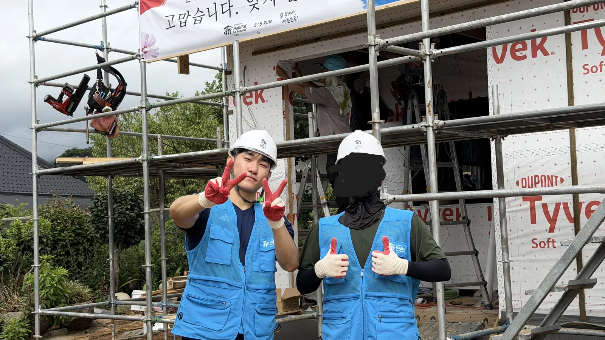
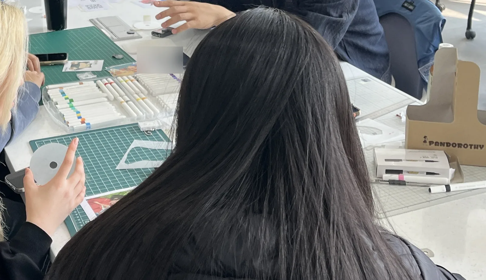
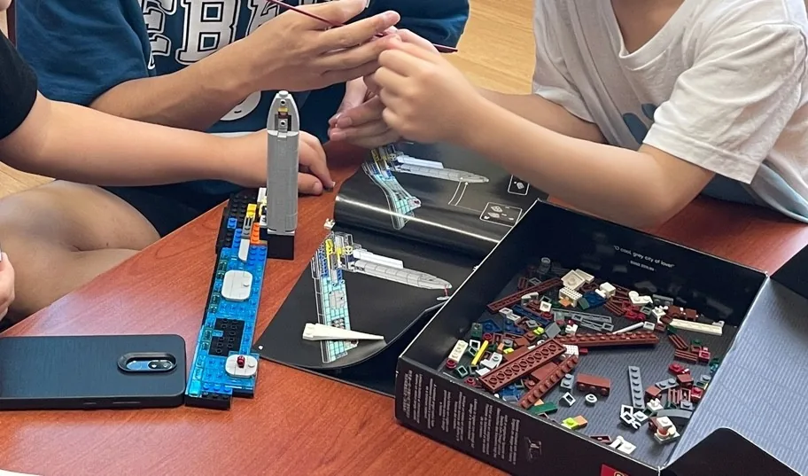

요양원 벽화 그리기
요양원 벽에 벽화를 그렸습니다.
1학년 때부터 활동하고 있는 건축학부 봉사 동아리입니다. 크게 세 가지 활동을 했습니다.

요양원 벽에 벽화를 그렸습니다.

국가유공자분들이 사실 집을 짓는 데 참여했습니다.

키링을 직접 만들어 모금에 참여했습니다.

선후배들과 함께 아동센터를 찾아 아이들과 레고로 건물을 만들었습니다. 건축을 공부하는 학생으로서 할 수 있는 방식의 봉사였습니다.